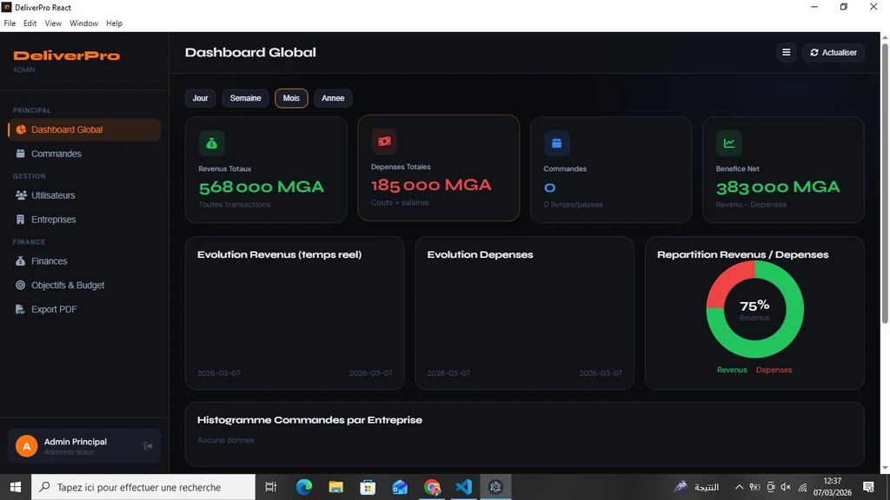
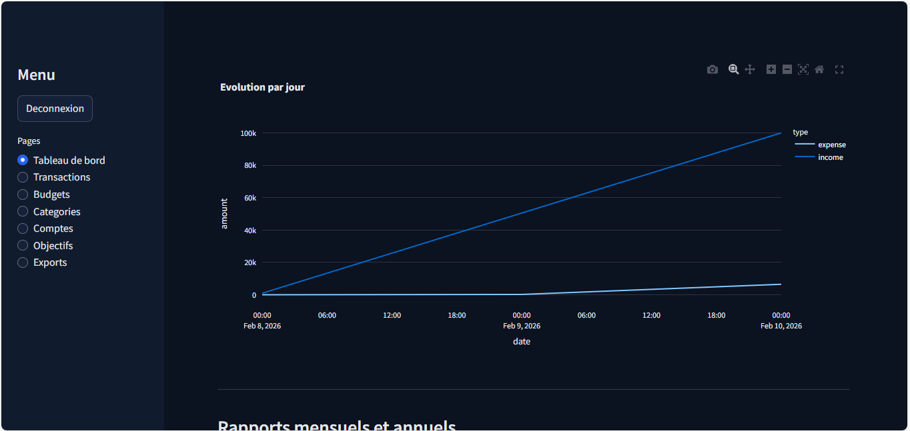

Comprendre
Clarifier le besoin, les utilisateurs et les contraintes avant de choisir la solution.
01 Développeur full-stack web et mobile
Je transforme un besoin métier en produit web ou mobile concret, avec une attention particulière à la clarté de l’interface, à la maintenance et à l’autonomie du client.
02 / Approche
Je ne cherche pas à remplir une page d’effets. Je cherche la bonne hiérarchie, le bon parcours et la solution technique qui restera compréhensible demain.
Clarifier le besoin, les utilisateurs et les contraintes avant de choisir la solution.
Relier une interface lisible à une architecture cohérente et adaptée au projet.
Concevoir un produit maintenable, documenté et plus simple à reprendre.
03 / Sélection
Quatre projets, quatre contextes. Chaque étude de cas montre le problème, les choix réalisés et le fonctionnement du produit.

01 — IA locale / Produit web
Un MVP full-stack qui transforme une question vague en réponse utile, conserve les conversations et permet d’exporter le contenu généré.
React · Vite · Django REST · MySQL · Ollama
Lire l’étude de cas ↗
02 — Gestion / Web & mobile
Back-office, API métier et application Flutter réunis dans un même produit de gestion de livraison.
Lire l’étude de cas ↗
03 — Restaurant / Site web
Un site de commande avec un parcours client clair et une administration conçue pour le restaurant.
Lire l’étude de cas ↗04 — Données / Outil métier
Une application qui centralise les transactions, calcule le solde et rend l’analyse financière plus lisible.
Streamlit · Plotly · FastAPI · Python
Lire l’étude de cas ↗
04 / Contact
Parlons du contexte, des utilisateurs et de la solution à construire.